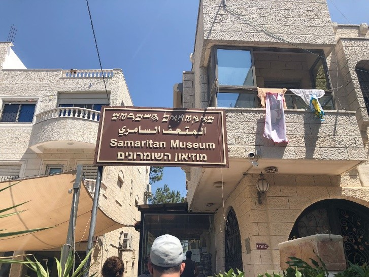 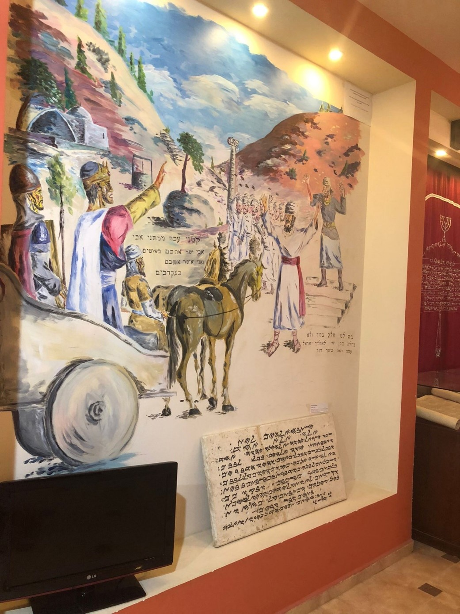
מוזיאון השומרונים
בשנת 1997 הוקם מוזיאון השומרונים בראש הר גריזים, הראשון מסוגו בתולדות הכת השומרונית. הרעיון להקים את המוזיאון היה במטרה להחיות את המורשת השומרונית, שהיא חפץ ייחודי ממנה. מהסוג בעולם, המורשת הזו הועברה על ידי ילדים מהורים וסבים לאורך אלפי שנים.
המוזיאון מנוהל על ידי הכהן יפת בן אשר.
במוזיאון מוצג ספר התורה העתיק ביותר של השומרונים אבל הוא מוצג רק ביום כיפור כמו שהזכרנו כבר בנושאי הדת והחגים.
היו שני ספרים עתיקים נוספים אולם לצערינו הם ניגנבו.
הרעיון להקים את המוזיאון היה במטרה להחיות את המורשת השומרונית, שהיא חפץ ייחודי ממנה. מהסוג בעולם, המורשת הזו הועברה על ידי ילדים מהורים וסבים לאורך אלפי שנים.
מוזיאון השומרונים, שהוקם על פסגת הר גריזים לפני כמעט עשרים וחמש שנים, הוא הראשון מסוגו בהיסטוריה של הכת השומרונית, עתיקה ומודרנית כאחד.
הוא מכיל בין אולמותיו נכסים שומרונים לא יסולא בפז, אם חושבים את גילו הקדום, כולל כתבי יד דתיים, חפצים ארכיאולוגיים, ספרים עבריים, היסטוריים ואסטרונומיים, ניגונים שומרונים ותמונות אקספרסיביות.
מוזיאון השומרונים פתח את שעריו לרווחה לתרבות של אחת החברות הבינלאומיות הוותיקות בעולם, על מנת לשמר את המנהגים, המסורות והטקסים הדתיים הייחודיים.
במוזיאון אפשר לקבל הדרכות והסברים על אורח החיים השומרוני, על הדת והמנהגים, ההיסטוריה של השומרונים, וכמובן להתרשם מהסוכה שקיימת שם שתחתיה נוהגים להעביר את ההרצאות והדרשות שהסכך מורכב מעצי פרי הדר אבל הפירוש שלהם לפירות הדר הוא כל הפירות שיש להם "הדר" ולכן אפשר למצוא גם פילפלים ירוקים.
על קירות המוזיאון קיימות פרוכות האחדות כשבראשן מנורת שבעת הקנים ותחתיה פסוקים אחדים מהתורה והתפילה.
במוזיאון השומרונים מופיעים גם דגמים של מבני השומרונים בהר גריזים.
במוזיאון אפשר לקבל ברכה, אפשר לראות איפה אברהם עקד את בנו, איפה היה בנוי המשכן.
עמוד הפייסבוק של המוזיאון
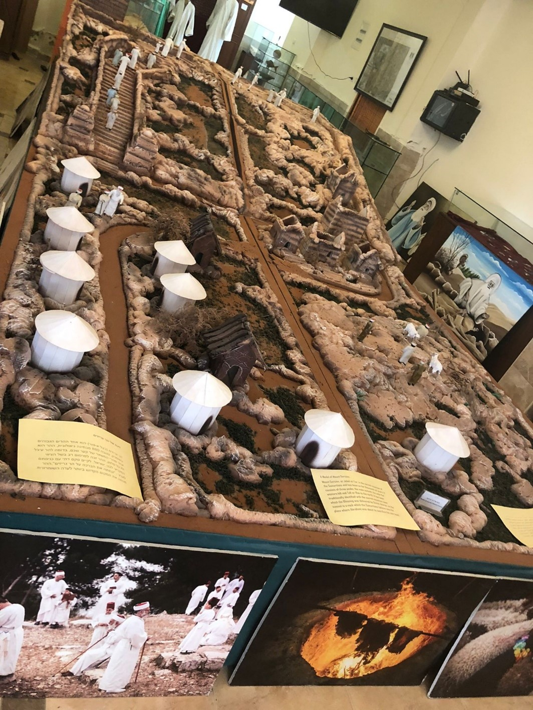
 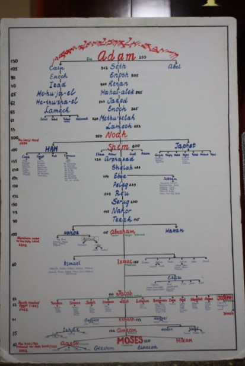
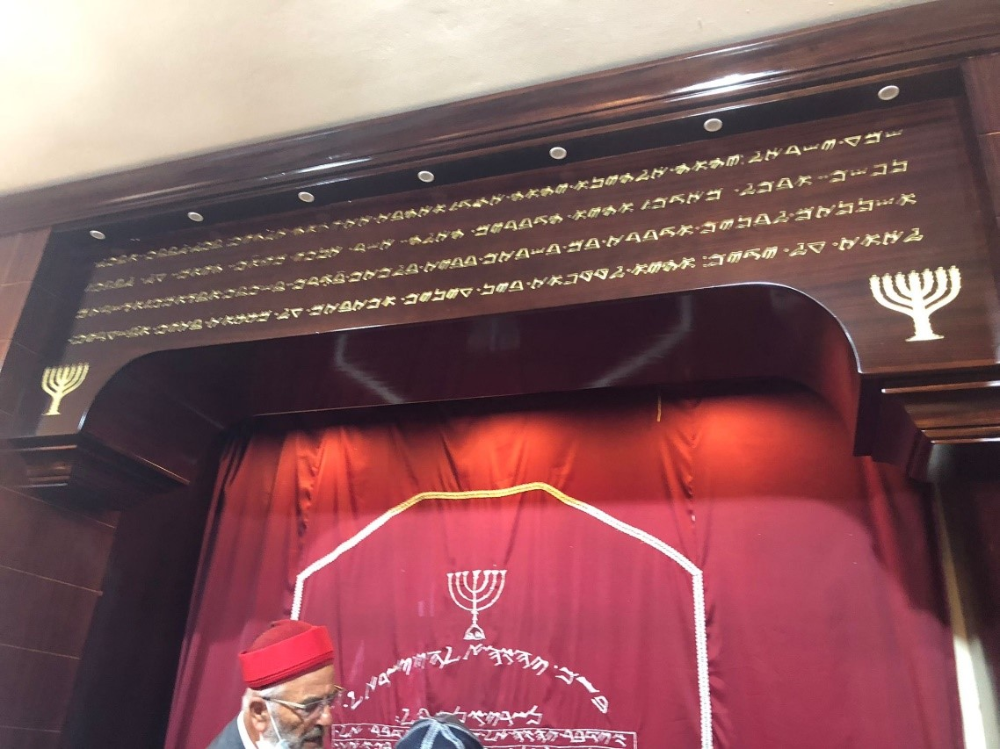
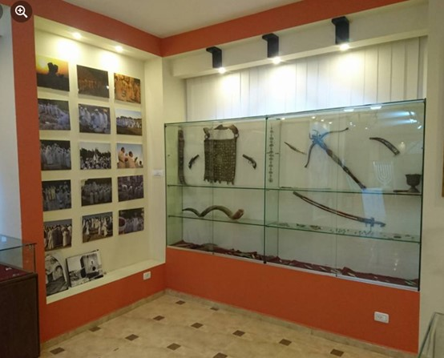
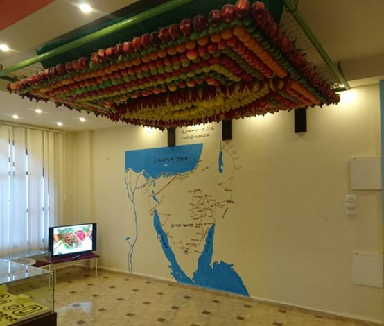
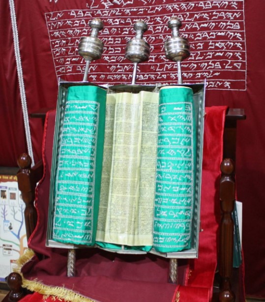
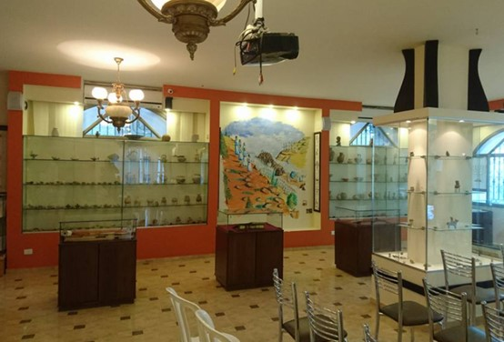
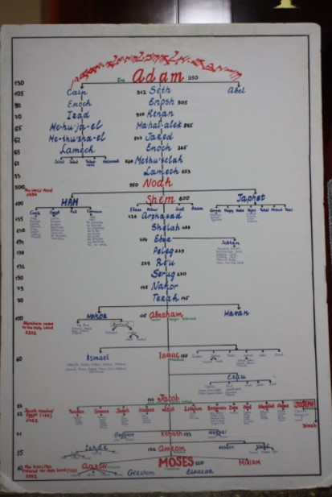
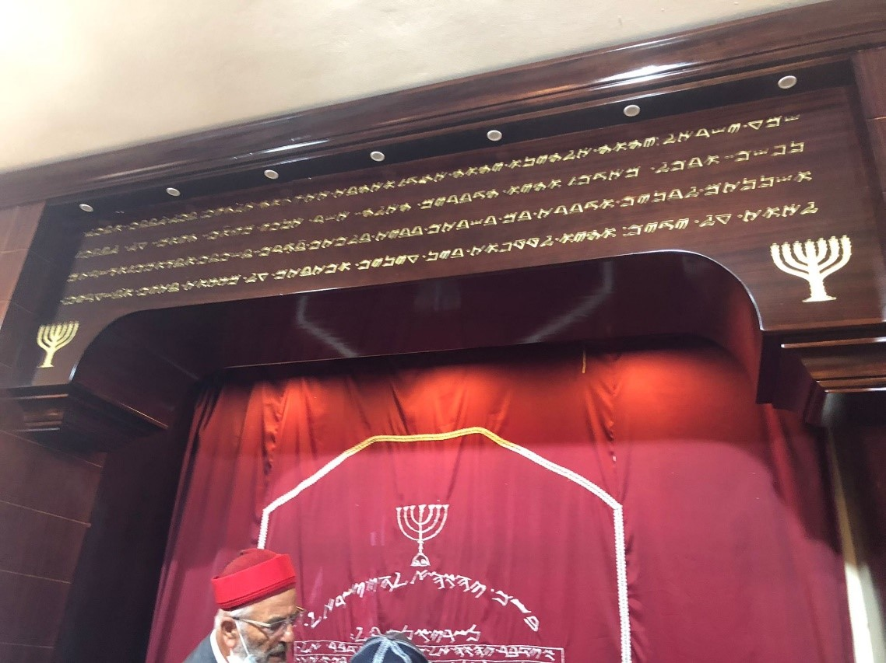
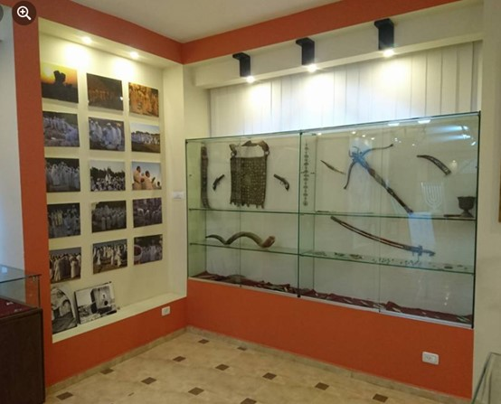
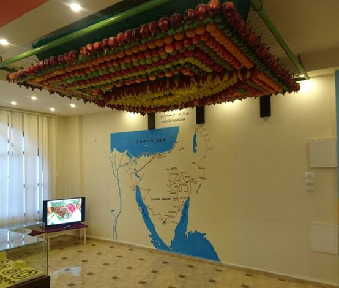
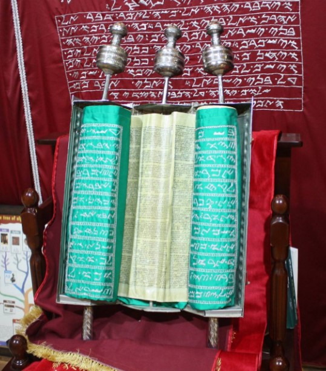
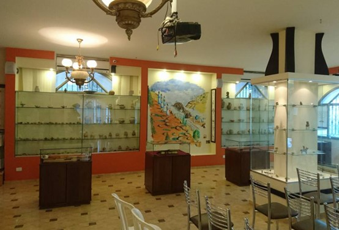